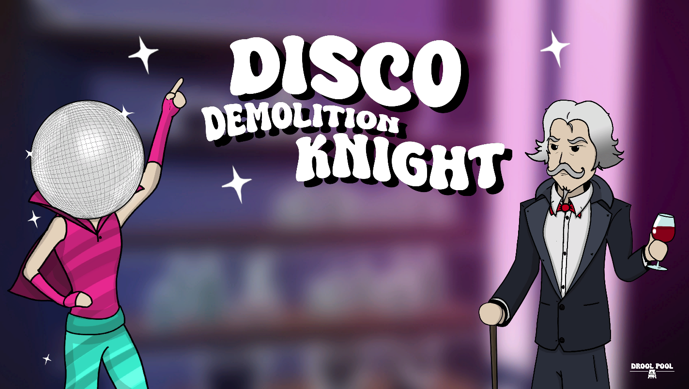
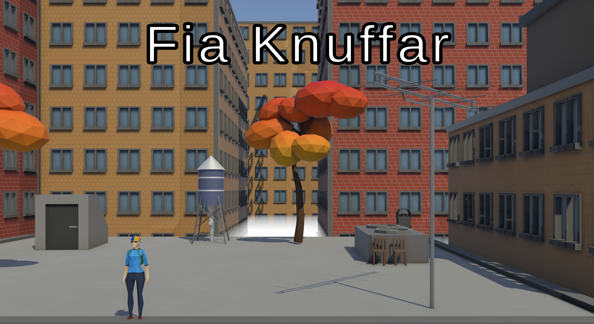

Disco Demolition Knight


6 weeks
This is a student project I did together with 11 other people in the course Spelprojekt 2 (Game project 2).
The game is about surviving hoards of enemies, using different musical weapons, that fire in sync with the music.
Some highligts:
- Shooting in sync with the music
- Player Weapon system
- Inventory system
Murder of Crows

2 weeks
A game where you control a flock of crows in a 3D environment.
I made this as part of an AI course with the purpouse of learning more about steering behaviours.
Some highligts:
- BOIDS-algorithm for bird movement
- Optimization with octrees
Worship
48 hours
My first ever Game Jam game. This project was made with 4 other people and is about collecting worshippers.
These worshippers can be used as a shield, but can also be sacrificed in order to upgrade your character.
Some highligts:
- AI-movement for mushroom people
- Player stats system
Fia knuffar

48 hours
My second Game Jam game.
This was made together with 3 other people, and the theme was "Fall", which we depicted with the main goal being making enemies fall off a building.
Some highligts:
- Pushing mechanic
- Enemy behaviour